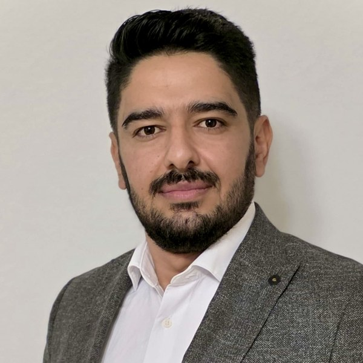

Hasan Alkhder
PhD Candidate, Department of Computer Engineering
Sakarya University, Türkiye · Advisor: Prof. Dr. Ahmet Zengin
Research
I work on machine translation into under-resourced language varieties, using Syrian Arabic as a controlled testbed. My thesis, Beyond Surface Accuracy: Adaptation, Context, and Targeted Evaluation for Low-Resource Dialectal Machine Translation, studies errors that standard metrics barely register: drift into the standard register, and wrong grammatical gender when the source language leaves it unspecified. I study three remedies together: adapting models to the target variety, conditioning on information outside the sentence (such as speaker identity), and evaluating with targeted, human-validated measures.
Expected graduation: June 2027.
Publications and Manuscripts
- SyrDiag: A Linguistically-Grounded Diagnostic Benchmark for Turkish–Syrian Arabic Translation.
H. Alkhder, A. Najjar, Y. Al-Omary, M. Pasa, A. Zengin, I. Tchappi. ICALP 2026 (accepted). - alkhder at AlexandriaX-2026: Context-Aware English-to-Dialectal Arabic Dialogue Translation with QLoRA-Fine-Tuned NileChat-3B.
H. Alkhder, M. Pasa, M. Hanini, A. Najjar, A. Zengin. AlexandriaX Shared Task, ArabicNLP 2026 (accepted). - alkhder at ImageEval 2026 Shared Tasks: Constrained Selection and Rotation-Averaged Logit Scoring for Multimodal Hallucination Detection.
M. Pasa, M. Hanini, A. Najjar, H. Alkhder. ImageEval Shared Task, ArabicNLP 2026 (accepted). - A Monolingual LoRA-Tuned Qwen2.5-3B System for Arabic Context-Based Question Answering.
H. Alkhder, M. Hanini, I. Hocine, M. Pasa, A. Najjar. Proceedings of the Eleventh Conference on Machine Translation (WMT), 2026. - SDNLP at AMIYA 2026: Syrian Arabic Dialect Modeling with LoRA.
H. Alkhder, M. Abboush. VarDial 2026, pp. 359–364. pdf - Benchmarking Dialectal Arabic–Turkish Machine Translation.
H. Alkheder, H. Bouamor, N. Habash, A. Zengin. MT Summit XIX, Vol. 1: Research Track, pp. 261–271, 2023. - Gender Ambiguity in Turkish–Syrian Arabic Dubbing: A Benchmark Dataset and Empirical Evaluation of Large Language Models.
H. Alkhder, N. Durrani, A. Najjar, S. Lamsiyah, A. Zengin. Under review at IEEE Access, 2026. data - TurkMSA-27K: A Benchmark Corpus for Low-Resource Turkish→Modern Standard Arabic Machine Translation.
H. Alkhder, M. Pasa, A. Zengin. Submitted to Language Resources and Evaluation, 2026. - Translation as a Decision Space: A Multi-Agent Perspective on Low-Resource Dialect Generation.
H. Alkhder, M. Abboush, I. Tchappi, A. Zengin, A. Najjar. arXiv:2609.04048, 2026. Presented at EXTRAAMAS 2026. arXiv
Contact
hasan.alkhder2@ogr.sakarya.edu.tr
Department of Computer Engineering, Sakarya University, Türkiye